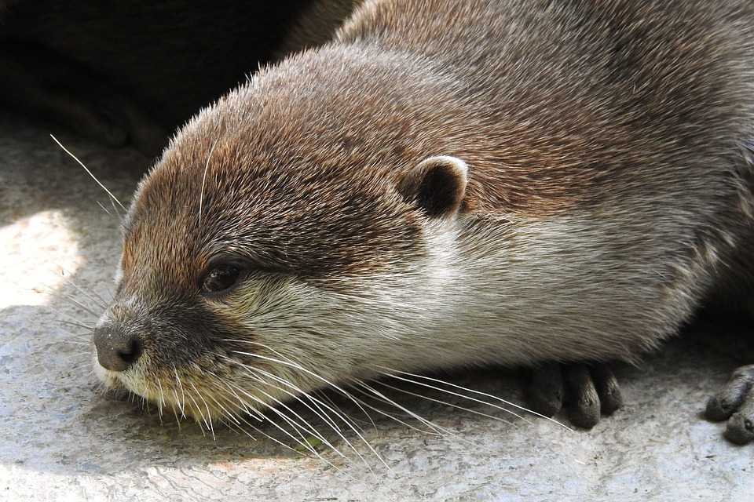

Long live the otters.
English
Français
Español
Deutsch
Italiano
Português
العربية
中文
Русский
日本語
한국어
हिंदी
বাংলা
Türkçe
Bahasa Indonesia
Kiswahili
Polski
Suomi
Nederlands
Svenska
Dansk
Norsk
Suomi
Čeština
Magyar
Slovenčina
Română
Hrvatski
Български
Српски
ไทย
Tiếng Việt
Ελληνικά
Українська
Melayu
